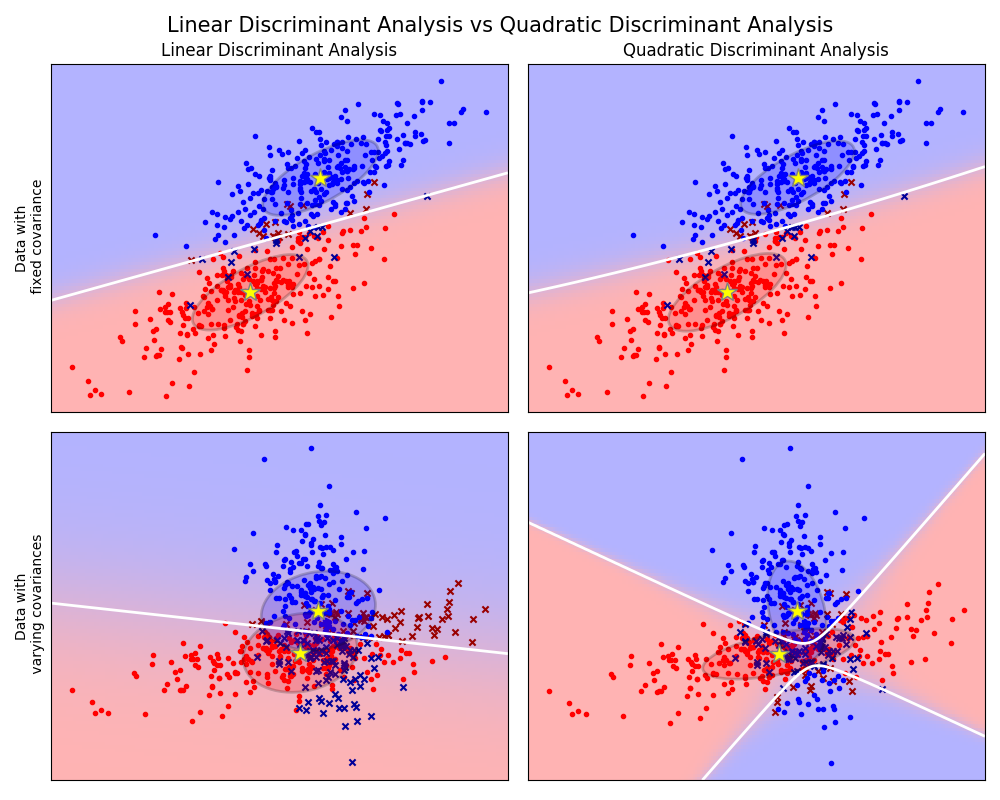

Note
Click here to download the full example code or run this example in your browser via Binder
1.5.5. Linear and Quadratic Discriminant Analysis with covariance ellipsoid¶
This example plots the covariance ellipsoids of each class and decision boundary learned by LDA and QDA. The ellipsoids display the double standard deviation for each class. With LDA, the standard deviation is the same for all the classes, while each class has its own standard deviation with QDA.
Out:
print(__doc__)
from scipy import linalg
import numpy as np
import matplotlib.pyplot as plt
import matplotlib as mpl
from matplotlib import colors
from sklearn.discriminant_analysis import LinearDiscriminantAnalysis
from sklearn.discriminant_analysis import QuadraticDiscriminantAnalysis
# #############################################################################
# Colormap
cmap = colors.LinearSegmentedColormap(
'red_blue_classes',
{'red': [(0, 1, 1), (1, 0.7, 0.7)],
'green': [(0, 0.7, 0.7), (1, 0.7, 0.7)],
'blue': [(0, 0.7, 0.7), (1, 1, 1)]})
plt.cm.register_cmap(cmap=cmap)
# #############################################################################
# Generate datasets
def dataset_fixed_cov():
'''Generate 2 Gaussians samples with the same covariance matrix'''
n, dim = 300, 2
np.random.seed(0)
C = np.array([[0., -0.23], [0.83, .23]])
X = np.r_[np.dot(np.random.randn(n, dim), C),
np.dot(np.random.randn(n, dim), C) + np.array([1, 1])]
y = np.hstack((np.zeros(n), np.ones(n)))
return X, y
def dataset_cov():
'''Generate 2 Gaussians samples with different covariance matrices'''
n, dim = 300, 2
np.random.seed(0)
C = np.array([[0., -1.], [2.5, .7]]) * 2.
X = np.r_[np.dot(np.random.randn(n, dim), C),
np.dot(np.random.randn(n, dim), C.T) + np.array([1, 4])]
y = np.hstack((np.zeros(n), np.ones(n)))
return X, y
# #############################################################################
# Plot functions
def plot_data(lda, X, y, y_pred, fig_index):
splot = plt.subplot(2, 2, fig_index)
if fig_index == 1:
plt.title('Linear Discriminant Analysis')
plt.ylabel('Data with\n fixed covariance')
elif fig_index == 2:
plt.title('Quadratic Discriminant Analysis')
elif fig_index == 3:
plt.ylabel('Data with\n varying covariances')
tp = (y == y_pred) # True Positive
tp0, tp1 = tp[y == 0], tp[y == 1]
X0, X1 = X[y == 0], X[y == 1]
X0_tp, X0_fp = X0[tp0], X0[~tp0]
X1_tp, X1_fp = X1[tp1], X1[~tp1]
# class 0: dots
plt.scatter(X0_tp[:, 0], X0_tp[:, 1], marker='.', color='red')
plt.scatter(X0_fp[:, 0], X0_fp[:, 1], marker='x',
s=20, color='#990000') # dark red
# class 1: dots
plt.scatter(X1_tp[:, 0], X1_tp[:, 1], marker='.', color='blue')
plt.scatter(X1_fp[:, 0], X1_fp[:, 1], marker='x',
s=20, color='#000099') # dark blue
# class 0 and 1 : areas
nx, ny = 200, 100
x_min, x_max = plt.xlim()
y_min, y_max = plt.ylim()
xx, yy = np.meshgrid(np.linspace(x_min, x_max, nx),
np.linspace(y_min, y_max, ny))
Z = lda.predict_proba(np.c_[xx.ravel(), yy.ravel()])
Z = Z[:, 1].reshape(xx.shape)
plt.pcolormesh(xx, yy, Z, cmap='red_blue_classes',
norm=colors.Normalize(0., 1.), zorder=0)
plt.contour(xx, yy, Z, [0.5], linewidths=2., colors='white')
# means
plt.plot(lda.means_[0][0], lda.means_[0][1],
'*', color='yellow', markersize=15, markeredgecolor='grey')
plt.plot(lda.means_[1][0], lda.means_[1][1],
'*', color='yellow', markersize=15, markeredgecolor='grey')
return splot
def plot_ellipse(splot, mean, cov, color):
v, w = linalg.eigh(cov)
u = w[0] / linalg.norm(w[0])
angle = np.arctan(u[1] / u[0])
angle = 180 * angle / np.pi # convert to degrees
# filled Gaussian at 2 standard deviation
ell = mpl.patches.Ellipse(mean, 2 * v[0] ** 0.5, 2 * v[1] ** 0.5,
180 + angle, facecolor=color,
edgecolor='black', linewidth=2)
ell.set_clip_box(splot.bbox)
ell.set_alpha(0.2)
splot.add_artist(ell)
splot.set_xticks(())
splot.set_yticks(())
def plot_lda_cov(lda, splot):
plot_ellipse(splot, lda.means_[0], lda.covariance_, 'red')
plot_ellipse(splot, lda.means_[1], lda.covariance_, 'blue')
def plot_qda_cov(qda, splot):
plot_ellipse(splot, qda.means_[0], qda.covariance_[0], 'red')
plot_ellipse(splot, qda.means_[1], qda.covariance_[1], 'blue')
plt.figure(figsize=(10, 8), facecolor='white')
plt.suptitle('Linear Discriminant Analysis vs Quadratic Discriminant Analysis',
y=0.98, fontsize=15)
for i, (X, y) in enumerate([dataset_fixed_cov(), dataset_cov()]):
# Linear Discriminant Analysis
lda = LinearDiscriminantAnalysis(solver="svd", store_covariance=True)
y_pred = lda.fit(X, y).predict(X)
splot = plot_data(lda, X, y, y_pred, fig_index=2 * i + 1)
plot_lda_cov(lda, splot)
plt.axis('tight')
# Quadratic Discriminant Analysis
qda = QuadraticDiscriminantAnalysis(store_covariance=True)
y_pred = qda.fit(X, y).predict(X)
splot = plot_data(qda, X, y, y_pred, fig_index=2 * i + 2)
plot_qda_cov(qda, splot)
plt.axis('tight')
plt.tight_layout()
plt.subplots_adjust(top=0.92)
plt.show()
Total running time of the script: ( 0 minutes 0.529 seconds)